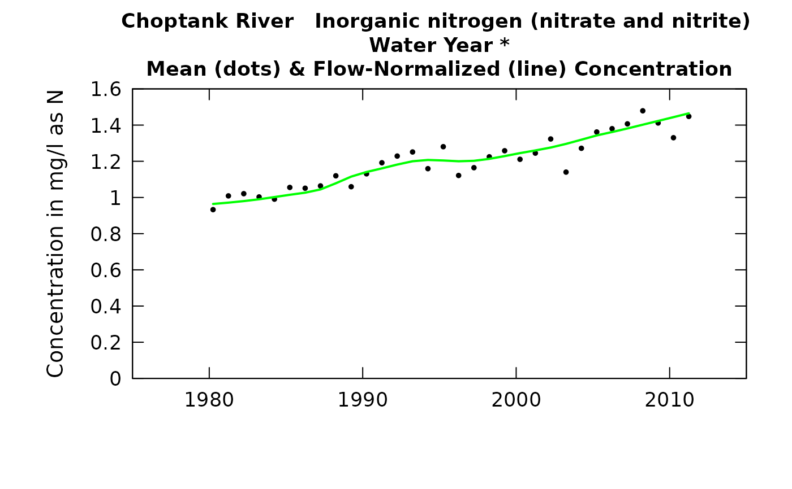
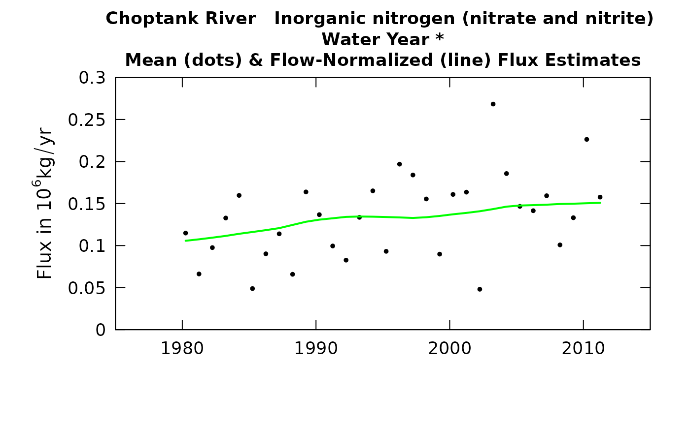
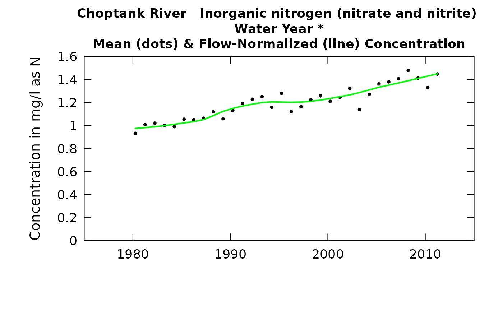
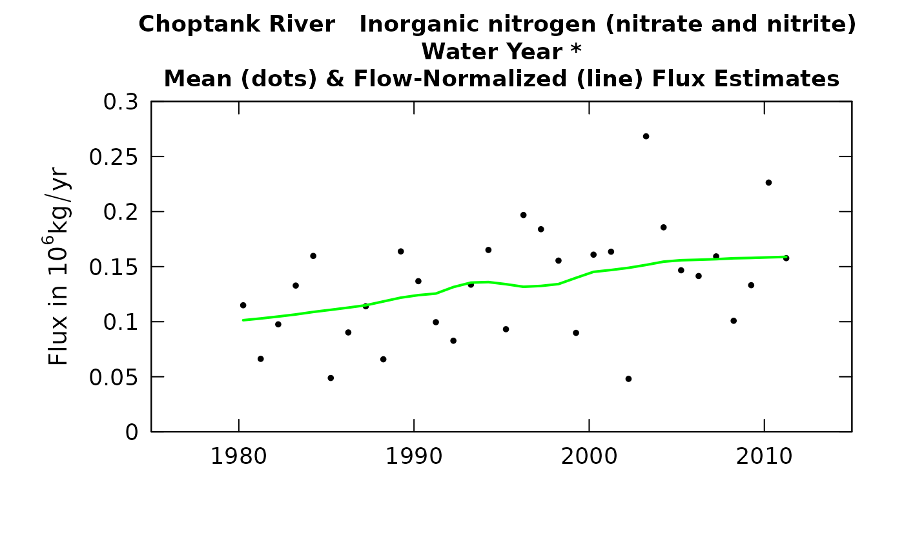
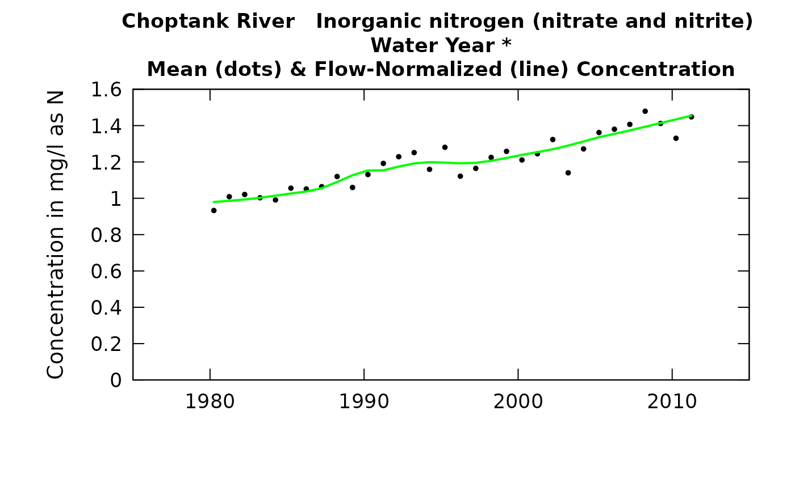
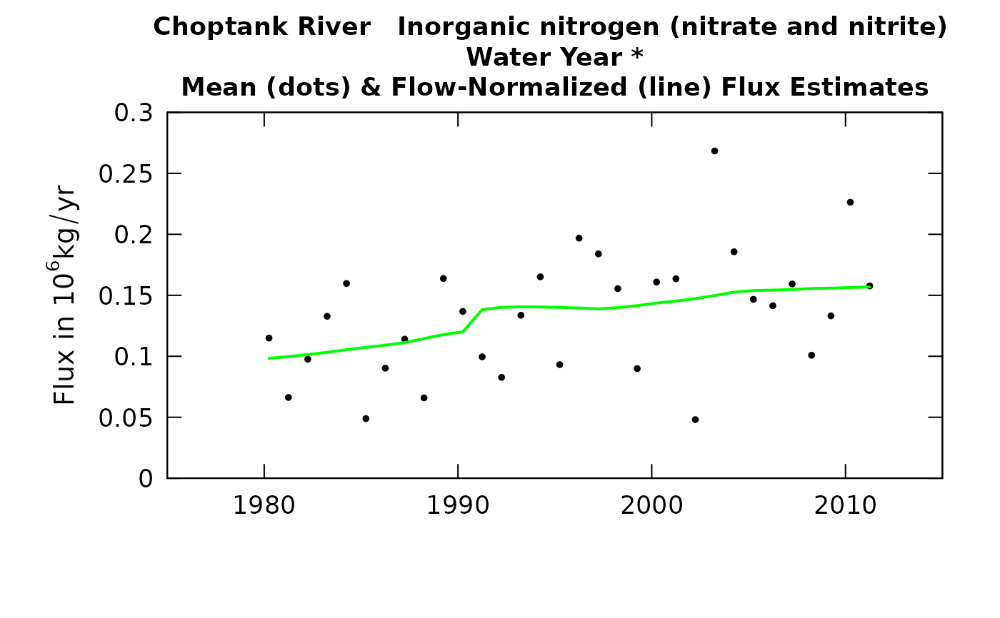

Annual series of flow-normalized concentration and flow-normalized flux
Source:R/runSeries.R
runSeries.RdrunSeries provides annual series of flow-normalized concentration and flow-normalized flux for the water quality record.
Computations could involve the use of the "wall" and/or use of "generalized flow
normalization". These two concepts are described in detail in the vignette:
vignette("Enhancements", package = "EGRET").
runSeries(eList, windowSide, surfaceStart = NA, surfaceEnd = NA, flowBreak = FALSE, Q1EndDate = NA, QStartDate = NA, QEndDate = NA, wall = FALSE, oldSurface = FALSE, sample1EndDate = NA, sampleStartDate = NA, sampleEndDate = NA, paStart = NA, paLong = NA, fractMin = 0.75, minNumObs = 100, minNumUncen = 50, windowY = 7, windowQ = 2, windowS = 0.5, edgeAdjust = TRUE, verbose = TRUE)
Arguments
| eList | named list with at least the Daily, Sample, and INFO dataframes |
|---|---|
| windowSide | integer. The width of the flow normalization window on each side of the year being estimated. A common value is 11, but no default is specified. If stationary flow normalization is to be used, then windowSide = 0 (this means that flow-normalization period for all years is the same). |
| surfaceStart | The Date (or character in YYYY-MM-DD) that is the start of the WRTDS model to be estimated and the first of the daily outputs to be generated. Default is NA, which means that the surfaceStart is based on the date of the first sample. |
| surfaceEnd | The Date (or character in YYYY-MM-DD) that is the end of the WRTDS model to be estimated and the last of the daily outputs to be generated. Default is NA, which means that the surfaceEnd is based on the date of the last sample. |
| flowBreak | logical, is there an abrupt break in the discharge record, default is FALSE. |
| Q1EndDate | The Date (as character in YYYY-MM-DD format) which is the last day, just before the flowBreak. Required if flowBreak = TRUE. |
| QStartDate | The first Date (as character in YYYY-MM-DD format) used in the flow normalization. Default is NA, which makes the QStartDate become the first Date in eList$Daily. |
| QEndDate | The last Date (as character in YYYY-MM-DD format) used in the flow normalization. Default is NA, which makes the QEndDate become the last Date in eList$Daily. |
| wall | logical. Whether there is an abrupt break in the concentration versus discharge relationship due to some major change in pollution control or water management. Default is FALSE. |
| oldSurface | logical, if TRUE, use surface previously estimated using modelEstimation. Default is FALSE. |
| sample1EndDate | The Date (as character in YYYY-MM-DD format) of the last day just before the wall. Default = NA. A date must be specified if wall = TRUE. |
| sampleStartDate | The Date (as character in YYYY-MM-DD format) of the first sample to be used. Default is NA which sets it to the first Date in eList$Sample. |
| sampleEndDate | The Date (as character in YYYY-MM-DD format) of the last sample to be used. Default is NA which sets it to the last Date in eList$Sample. |
| paStart | numeric integer specifying the starting month for the period of analysis, 1<=paStart<=12.
Default is NA, which will use the paStart in the eList$INFO data frame. See also |
| paLong | numeric integer specifying the length of the period of analysis, in months, 1<=paLong<=12.
Default is NA, which will use the paLong in the eList$INFO data frame. See also |
| fractMin | numeric specifying the minimum fraction of the observations required to run the weighted regression, default is 0.75. The minimum number will be the maximum of minNumObs and fractMin multiplied by total number of observations. |
| minNumObs | numeric specifying the miniumum number of observations required to run the weighted regression, default is 100 |
| minNumUncen | numeric specifying the minimum number of uncensored observations to run the weighted regression, default is 50 |
| windowY | numeric specifying the half-window width in the time dimension, in units of years, default is 7 |
| windowQ | numeric specifying the half-window width in the discharge dimension, units are natural log units, default is 2 |
| windowS | numeric specifying the half-window with in the seasonal dimension, in units of years, default is 0.5 |
| edgeAdjust | logical specifying whether to use the modified method for calculating the windows at the edge of the record. The edgeAdjust method tends to reduce curvature near the start and end of record. Default is TRUE. |
| verbose | logical specifying whether to output status messages. |
Value
eList named list with INFO, Daily, and Sample dataframes, along with the surfaces matrix.
Details
When using generalized flow-normalization, it is best to have the Daily data frame extend well beyond the years that are in the Sample data frame. Ideally, the Daily data frame would start windowSide years before the start of the Sample data set, if the data exist to provide for that. Generally that isn't possible for the end of the record because the Sample data may end very close to the present. To the extent that is possible therefore, it is better to include more discharge data after the end of the Sample record. Also note that in the case run in the examples don't do that, because the data set needs to be appropriate for stationary flow normalization as well (and package size considerations make it difficult to include specialized examples).
Examples
eList <- Choptank_eList # \donttest{ # Automatic calculations based on windowSide = 11 # four possible ways to do generalized flow normalization #Option 1: Use all years for flow normalization. seriesOut_1 <- runSeries(eList, windowSide = 0)#> Survival regression (% complete): #> 0 1 2 3 4 5 6 7 8 9 10 #> 11 12 13 14 15 16 17 18 19 20 #> 21 22 23 24 25 26 27 28 29 30 #> 31 32 33 34 35 36 37 38 39 40 #> 41 42 43 44 45 46 47 48 49 50 #> 51 52 53 54 55 56 57 58 59 60 #> 61 62 63 64 65 66 67 68 69 70 #> 71 72 73 74 75 76 77 78 79 80 #> 81 82 83 84 85 86 87 88 89 90 #> 91 92 93 94 95 96 97 98 99 #> Survival regression: Done# Option 2: Use sliding window throughout the whole flow normalization process. # In each case it is a 15 year window (23 = 1 + 2*11) seriesOut_2 <- runSeries(eList, windowSide = 11)#> Survival regression (% complete): #> 0 1 2 3 4 5 6 7 8 9 10 #> 11 12 13 14 15 16 17 18 19 20 #> 21 22 23 24 25 26 27 28 29 30 #> 31 32 33 34 35 36 37 38 39 40 #> 41 42 43 44 45 46 47 48 49 50 #> 51 52 53 54 55 56 57 58 59 60 #> 61 62 63 64 65 66 67 68 69 70 #> 71 72 73 74 75 76 77 78 79 80 #> 81 82 83 84 85 86 87 88 89 90 #> 91 92 93 94 95 96 97 98 99 #> Survival regression: Done# Option 3: Flow normalization is based on splitting the flow record at 1990-09-30 # But in years before the break it uses all flow data from before the break, # and years after the break uses all flow data after the break seriesOut_3 <- runSeries(eList, windowSide = 0, flowBreak = TRUE, Q1EndDate = "1990-09-30")#> Survival regression (% complete): #> 0 1 2 3 4 5 6 7 8 9 10 #> 11 12 13 14 15 16 17 18 19 20 #> 21 22 23 24 25 26 27 28 29 30 #> 31 32 33 34 35 36 37 38 39 40 #> 41 42 43 44 45 46 47 48 49 50 #> 51 52 53 54 55 56 57 58 59 60 #> 61 62 63 64 65 66 67 68 69 70 #> 71 72 73 74 75 76 77 78 79 80 #> 81 82 83 84 85 86 87 88 89 90 #> 91 92 93 94 95 96 97 98 99 #> Survival regression: Done# Option 4: Flow normalization is based on splitting the flow record at 1990-09-30 # but before the break uses a 23 year window of years before the break # after the break uses a 23 year window of years after the break seriesOut_4 <- runSeries(eList, windowSide = 11, flowBreak = TRUE, Q1EndDate = "1990-09-30")#> Survival regression (% complete): #> 0 1 2 3 4 5 6 7 8 9 10 #> 11 12 13 14 15 16 17 18 19 20 #> 21 22 23 24 25 26 27 28 29 30 #> 31 32 33 34 35 36 37 38 39 40 #> 41 42 43 44 45 46 47 48 49 50 #> 51 52 53 54 55 56 57 58 59 60 #> 61 62 63 64 65 66 67 68 69 70 #> 71 72 73 74 75 76 77 78 79 80 #> 81 82 83 84 85 86 87 88 89 90 #> 91 92 93 94 95 96 97 98 99 #> Survival regression: Done# }